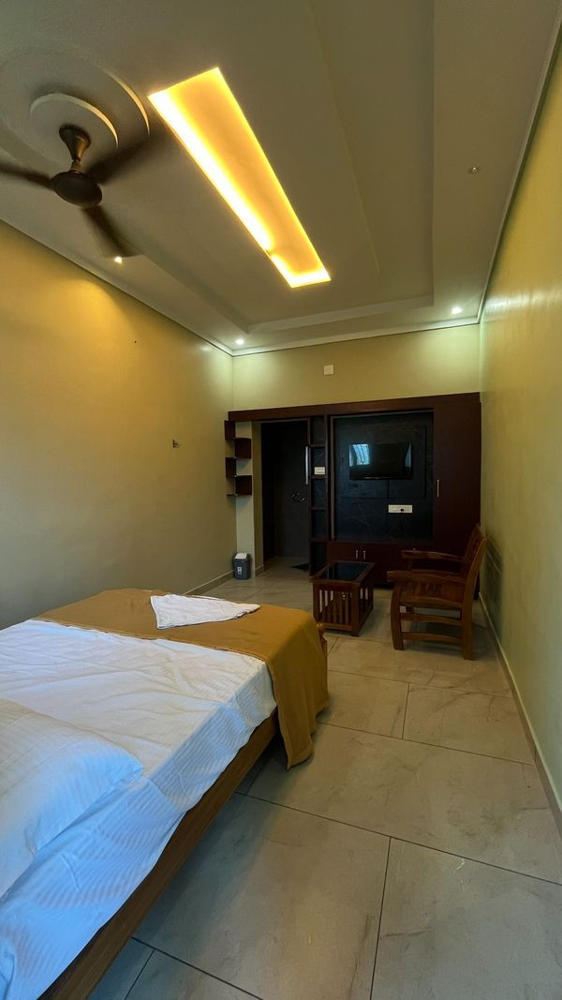
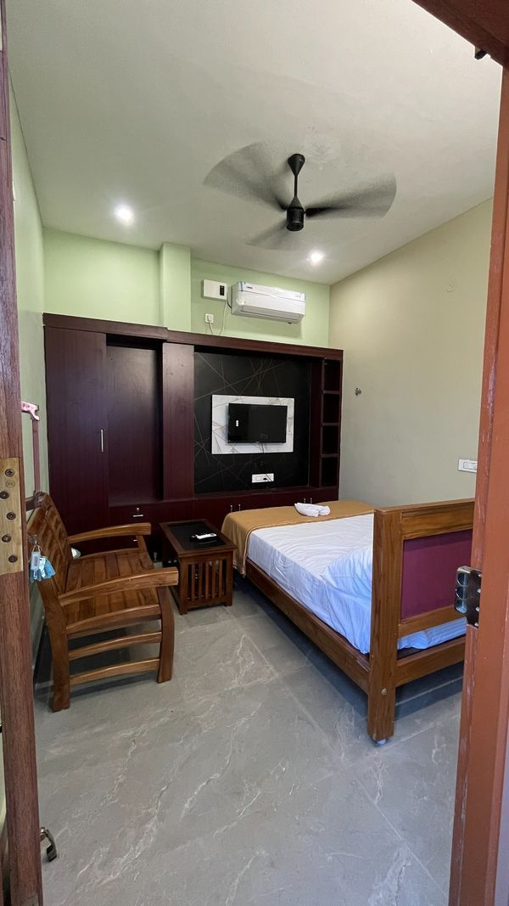
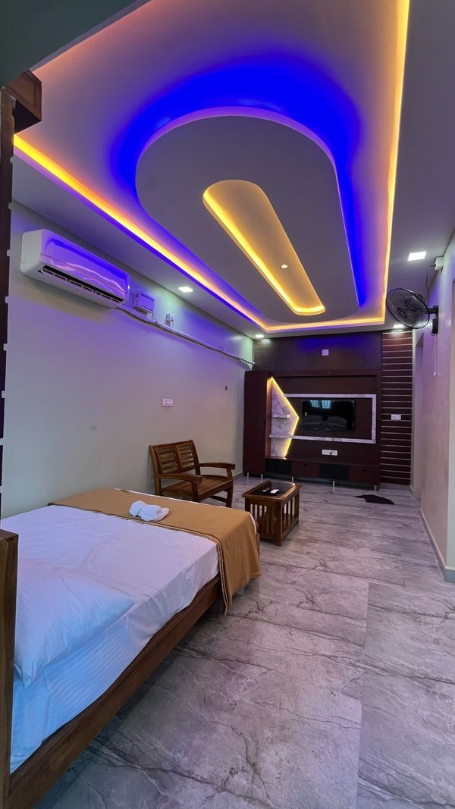
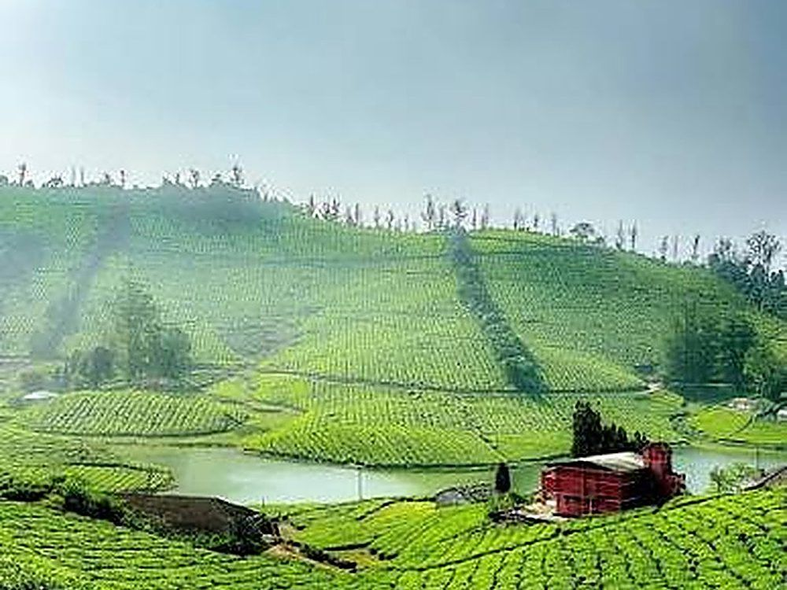
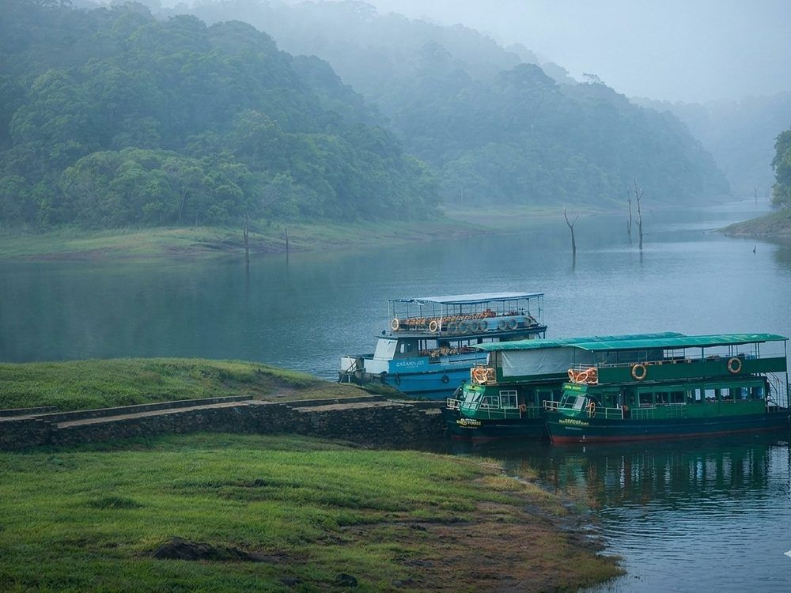
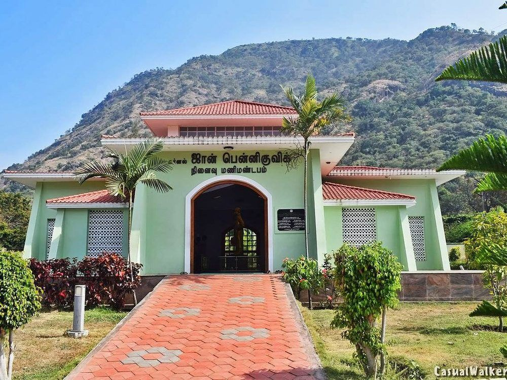
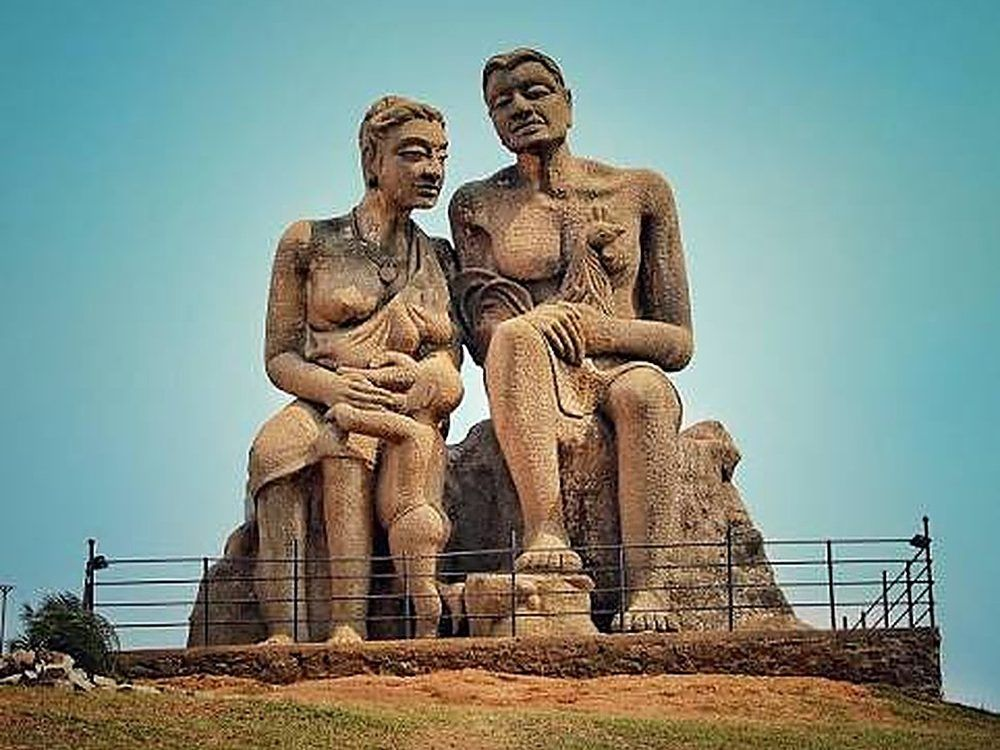
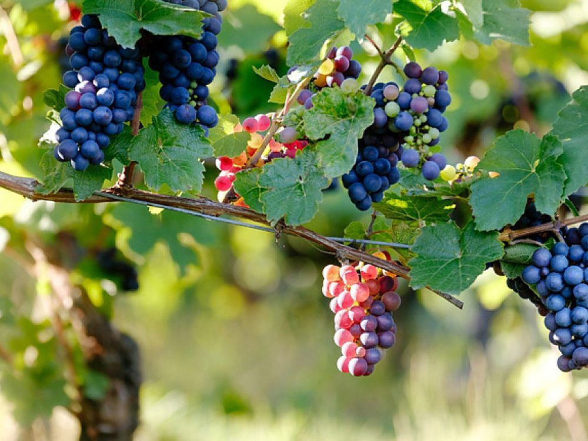

Vaigai Dam, Theni
Vaigai Dam in Theni is a lifeline for the region, supplying water to five districts. Its wide reservoir and landscaped gardens make it a pleasant place to stop and take in the view.
View on mapWelcome To
Your Comfort, Our Priority
Enjoy a royal stay with world-class amenities and warm hospitality that makes every guest feel at home from the moment they arrive.
Royal Residency is located in Theni and offers comfortable, affordable accommodation for every kind of traveller. With 16 well-appointed rooms — from Superior to Deluxe — we have a room for every need of the modern traveller.
Looking for a stay in Theni? Our stay for family, couples and business people comes with a 24-hour reception, power backup, and top-tier room service for a hassle-free visit.
Situated on Madurai Main Road, Aundipatti — rooms near Theni GH (Government Hospital), with all daily necessities, shopping, and major tourist spots within easy reach.
Discover the best of Theni & Aundipatti
Theni GH (Government Hospital) with Medical College
Theni GH, the Government Hospital and medical college, provides comprehensive healthcare services. Our rooms near Theni GH are convenient for patients' families and visitors.
All Facilities within 1 km
Markets, supermarkets, restaurants, banks, and daily essentials all just a short walk away.
Our
Rooms in Theni for family, couples & business people | Maximum 2 Adults + Children per Room | 16 Rooms Available
To book a room, call 9698039407

Comfortable and well-furnished room offering all essential amenities for a pleasant stay. A budget room in Theni, perfect for budget-conscious travelers.

Beat the heat with our air-conditioned Superior rooms in Theni, ideal for family and couples. Enjoy a relaxed, cool environment with superior comfort and modern amenities.

Experience the pinnacle of luxury in our spacious Deluxe rooms in Theni, a fine stay for couples and business people — exquisitely furnished with premium fittings and exclusive services.
What We Offer
Everything you need for a perfect stay in Theni
Discover
Beautiful places to visit around Theni, close to your stay at Royal Residency
Vaigai Dam in Theni is a lifeline for the region, supplying water to five districts. Its wide reservoir and landscaped gardens make it a pleasant place to stop and take in the view.
View on mapA calm and refreshing spot in Theni that is safe for families. Bathing is allowed here, so you can cool off in the falls after a day of travel.
View on map
A chill hill station in Theni district where you can wander through the mist among green, rolling slopes. A peaceful escape from the heat of the plains.
View on map
An eye-catching place to visit in Kerala, with a misty lake, forested hills and boats waiting at the shore.
View on map
A memorial to the British engineer John Pennycuick, who constructed the Mullai Periyar Dam. It stands at Lower Camp with the hills rising behind it.
View on mapKnown as the Princess of Hills, Kodaikanal greets you with cool mist, tall rock faces and thick green forest.
View on mapA unique spot in Cumbum, Theni where you can bathe on the bridge itself, with the mountains of the Western Ghats rising all around you.
View on mapA beautiful place in Kerala that refreshes the soul, with tea-covered hills and a winding mountain road.
View on map
A towering statue that shows off the sculpting skills of Indian artists.
View on map
A garden full of grapes in Theni, set below the mountains. Fresh bunches ripen on the vine all around.
View on mapGood To Know
Policies and quick answers for your stay at Royal Residency, residency in Theni
Please inform the reception by phone if you need to cancel. Cancellation is free before check-in.
All guests must present a valid government-issued photo ID at check-in (Aadhaar card, Passport, Voter ID, or Driving License).
Children are welcome. Maximum occupancy is 2 adults with children per room. Infants stay free of charge with existing bedding.
Pets are not permitted within the residency premises to maintain a clean and comfortable environment for all guests.
Parking facilities are available at the residency for our guests. Please park your vehicle in the designated area and lock it properly.
Payment can be done in reception after sharing the guest details. We accept cash and UPI.
Royal Residency is on Madurai Main Road, K. Vilakku, Aundipatti, Theni – 625 562, opposite Anna Co-operative Spinning Mills.
We have 16 rooms: Superior Non-A/C at ₹1,000 per day, Superior A/C at ₹1,500 per day and Deluxe A/C at ₹4,500 per day.
Call 9698039407 or message us on WhatsApp to reserve a room. You can see every room and its photo on our View Rooms page.
Payment is done in reception after you share the guest details, by cash or UPI. There is no online payment on this website.
Each room takes a maximum of 2 adults with children.
Every guest needs a valid government photo ID: Aadhaar card, Passport, Voter ID or Driving License.
Wi-Fi, parking, air conditioning in A/C rooms, television, hot water, room service, CCTV security, a lift, power backup and a 24-hour reception.
Theni GH (Government Hospital) with Medical College is nearby, and shops, restaurants and banks are a short walk away. Popular places to visit around Theni include Vaigai Dam, Megamalai and Chinna Suruli Falls.
Royal Residency is a comfortable place to stay in Theni for families, couples and business people, with clean rooms in Non-A/C, A/C and Deluxe A/C categories, 24-hour reception, parking and Wi-Fi.
Yes. Royal Residency offers rooms in Theni near Theni GH (Government Hospital) with Medical College, a convenient accommodation in Theni for patients' families and visitors.
Get In Touch
Reserve your room in Theni – we'd love to hear from you
K.vilakku, Madurai Main Road,
Anna Co-operative Spinning Mills Opp,
Aundipatti, Theni – 625 562